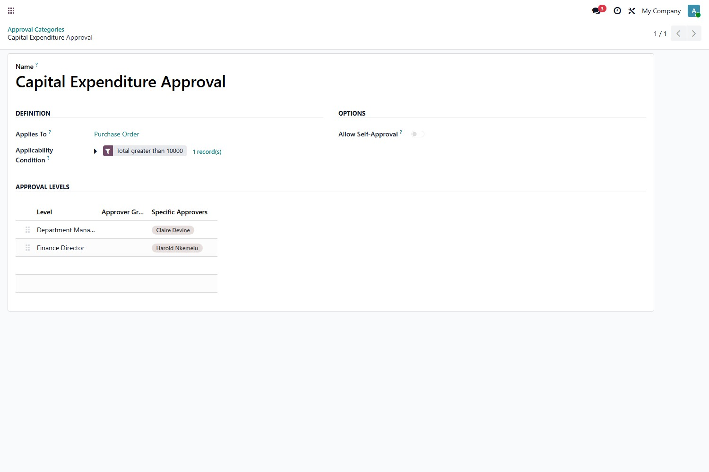
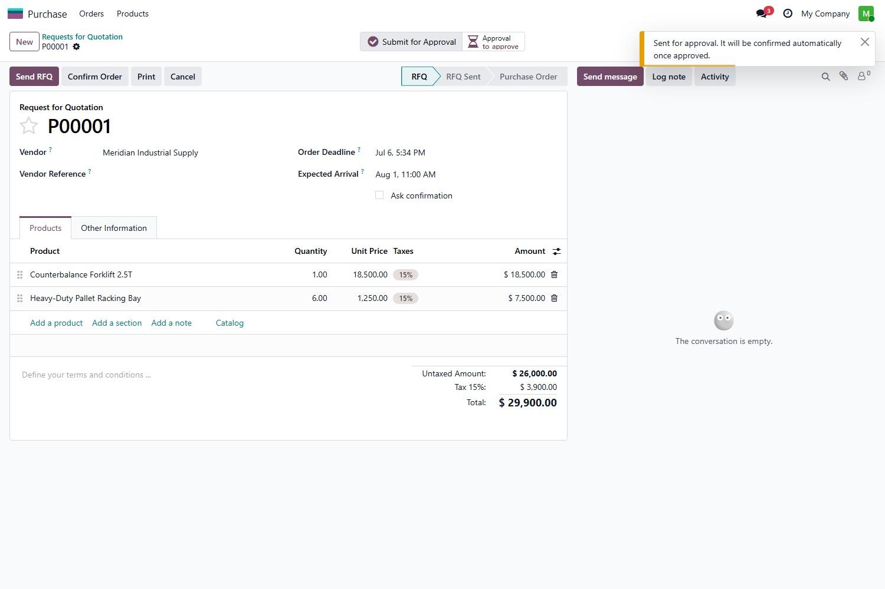
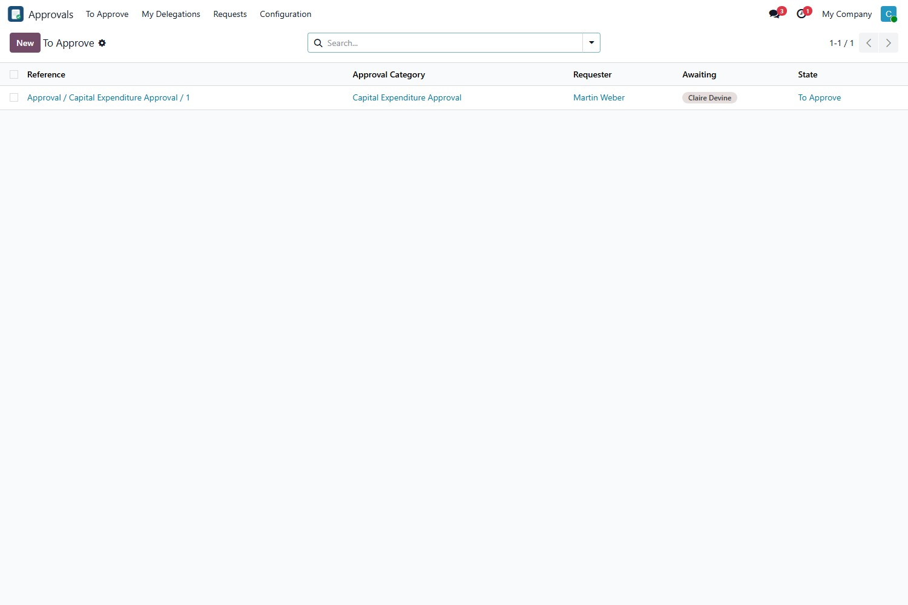
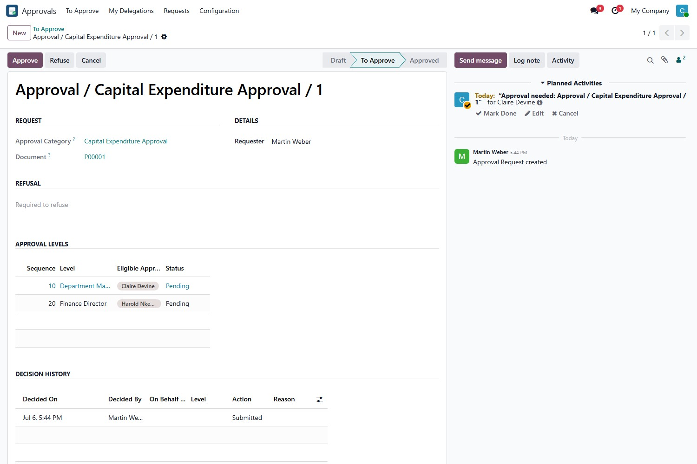
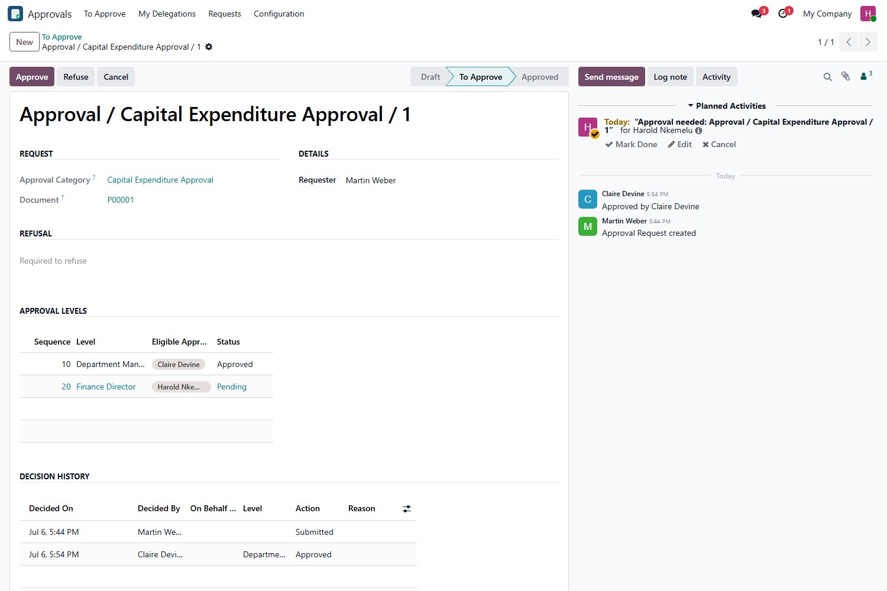
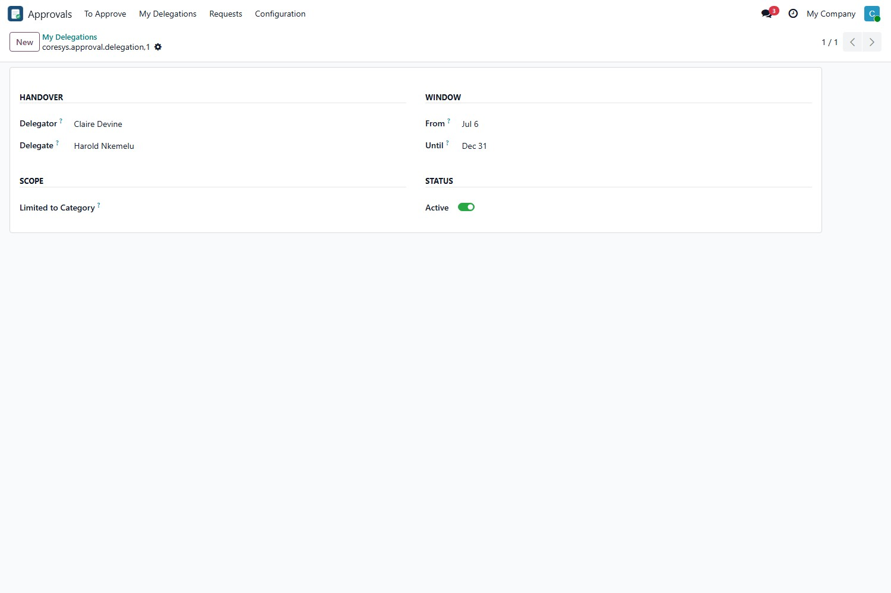

Route any record through a configurable, multi-level approval chain — enforced at the ORM boundary, recorded in an immutable audit trail, and surfaced to each approver in a personal To Approve inbox. Configure the process once; the engine holds the line everywhere.
Smart Approvals is an approval engine, not a single hard-wired workflow. Define a category for any model — purchase orders, expenses, a custom document — give it as many sequential levels as the process needs, and the engine gates the record until every level has signed off. The bundled Purchase bridge is included and ready to use, so you can see it working the moment you install.
Config-driven chains for any model. Define an approval category once, add as many ordered levels as you need, and point each level at an approver group or named users. An optional condition — for example, only orders above a set amount — decides when approval kicks in. No per-workflow custom development.
A gate that cannot be routed around. The hold is enforced at the ORM boundary, not just in the button. A raw write, an import, a scripted create, or a crafted context that tries to jump a gated record to a confirmed state is rejected — the approval chain is the only way through.
An audit trail an auditor will trust. Every submission and decision is a create-only record: who acted, at which level, the outcome and the reason. The trail cannot be edited or deleted afterward — not even by an administrator.
Under Approvals → Configuration → Approval Categories, pick the document type, set an optional condition, and list the levels in order — each pointing at the people who may sign off. Here a capital-expenditure category gates any purchase order above 10,000 through a department manager and then a finance director.

Any record that matches a category is held. On a purchase order, the controls appear on the document itself: a Submit for Approval action and an Approval status button, right in the button box — no separate screen to learn.
The requester submits the record and it is held for sign-off. There is nothing else to remember: once the chain clears, the original action — confirming the order — runs automatically. Try to confirm a gated order directly and the gate stops it and sends it for approval instead.

Everyone who can approve sees a filtered To Approve list of exactly what is waiting on them right now, backed by native Odoo to-do activities so reminders show up where people already look.

The request shows the full level sequence, highlights the level awaiting a decision, and puts Approve and Refuse in the header. Approve, and it advances to the next level; refuse with a reason, and it stops. Chatter keeps a human-readable timeline beside the structured log.

Every submission and decision is recorded on the request: the level, the action, who decided and when, the reason on a refusal, and — where delegation was used — whose authority was exercised. The trail is immutable, so it always reflects what actually happened.

An approver going on leave can hand their authority to a colleague for a fixed date window, optionally limited to one category. Delegated approvals are attributed to both the person who acted and the original approver, so cover never breaks the chain and never hides who signed.

base and mail modulespurchase moduleTwo modules, one listing. Smart Approvals is the engine; Approvals for Purchase is a thin bridge that gates purchase-order confirmation through it. Install the engine on its own to approve any document, or add the bridge for a working purchase gate on day one.
CoreSys Builders. © 2026, all rights reserved. Licensed under the Odoo Proprietary License v1.0 (OPL-1); redistribution and resale are not permitted. Questions and feature requests are welcome at coresysbuilders.com.